فصل ۱ قلب قوانین راهنمایی و رانندگی هلند را در بر میگیرد — قواعدی که مشخص میکنند هر کاربر راه در هر لحظه چه کارهایی را باید و چه کارهایی را نباید انجام دهد. این قوانین شامل حال همگان میشود: دوچرخهسواران، راکبان موپد، رانندگان خودرو، رانندگان کامیون، عابران پیادهای که بهصورت دسته یا کاروان حرکت میکنند و سوارکاران. هیچکس در جاده از این قواعد مستثنی نیست.
قوانین بر اساس موضوع دستهبندی شدهاند. هر بخش یکی از جنبههای رفتار ترافیکی را پوشش میدهد و در کنار هم تصویری کامل از نحوه کارکرد مورد انتظار جادههای هلند ارائه میکنند.
§ ۱ — موقعیت در راه
هر گروه از استفادهکنندگان راه باید در کجا و در کدام بخش از جاده تردد کنند.
هر راننده موظف است تا حد امکان در منتهیالیه سمت راست حرکت کند. این قاعده بنیادین موقعیت در راه است و در تمامی جادهها و موقعیتها اعمال میشود، مگر آنکه قاعده دیگری صراحتاً خلاف آن را مقرر کرده باشد.

عابران پیاده از یک ترتیب اولویت مشخص برای راه رفتن پیروی میکنند. انتخاب اول: پیادهرو (trottoir) یا مسیر پیاده (voetpad). اگر هیچکدام وجود نداشت: مسیر دوچرخه یا مسیر مشترک دوچرخه و موپد. و اگر هیچیک از آنها نیز موجود نبود: شانه خاکی (berm) یا منتهیالیه لبه سوارهرو.
افرادی که با وسایل غیرخودرویی حرکت میکنند — مانند اسکیت، اسکیتبرد یا واکر — باید از مسیر دوچرخه، مسیر پیاده یا پیادهرو استفاده کنند. در صورت نبود تمامی این موارد، از سوارهرو استفاده میکنند.
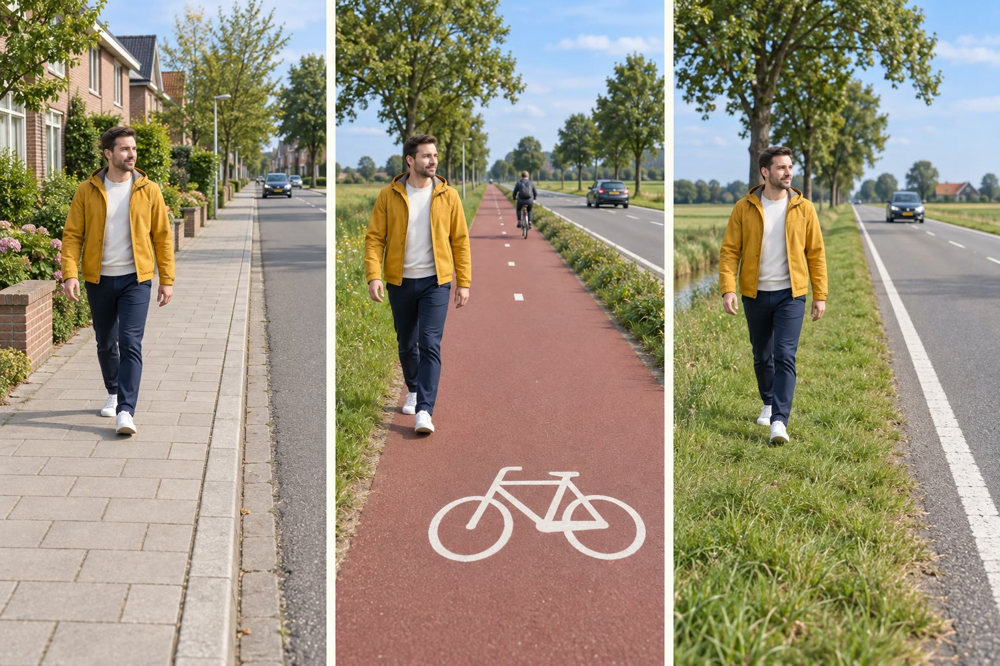
دوچرخهسواران در صورت وجود مسیر دوچرخه اجباری یا مسیر مشترک دوچرخه و موپد موظف به استفاده از آن هستند. اگر مسیر اجباری وجود نداشته باشد، از سوارهرو استفاده میکنند. همچنین میتوانند از مسیر دوچرخه غیراجباری (اختیاری) استفاده نمایند.
موپد سبک (snorfiets) دارای موتور درونسوز تنها در صورتی مجاز به استفاده از مسیر دوچرخه اختیاری است که موتور آن خاموش باشد.
دوچرخهها یا دوچرخههای دارای یدک که عرض آنها (با احتساب بار) بیش از ۰٫۷۵ متر باشد، در هر صورت مجاز به استفاده از سوارهرو هستند.

راکبان موپد (bromfietsers) از مسیر مشترک دوچرخه و موپد استفاده میکنند. اگر چنین مسیری وجود نداشته باشد، در سوارهرو تردد میکنند. موپدها یا موپدهای دارای یدک که عرض آنها (با احتساب بار) بیش از ۰٫۷۵ متر باشد، همیشه از سوارهرو استفاده میکنند.
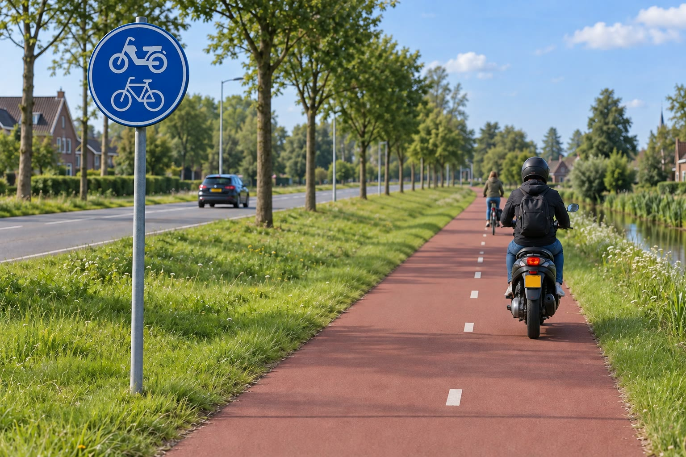
رانندگان وسایل نقلیه معلولان میتوانند از هر یک از بخشهای زیر استفاده کنند: پیادهرو، مسیر پیاده، مسیر دوچرخه، مسیر مشترک دوچرخه و موپد، یا سوارهرو. آنها در انتخاب مناسبترین سطح راه آزادی عمل کامل دارند.

سوارکاران از مسیر سوارکاری (ruiterpad) استفاده میکنند. اگر مسیر سوارکاری وجود نداشته باشد، از شانه خاکی یا سوارهرو استفاده مینمایند.

تمامی رانندگانی که مشمول قواعد خاص بالا نیستند — رانندگان خودروی سواری، کامیون و اتوبوس — از سوارهرو (rijbaan) استفاده میکنند. برای پارک کردن، آنها میتوانند از سایر بخشهای راه نیز استفاده کنند، بهجز پیادهرو، مسیر پیاده، مسیر دوچرخه، مسیر مشترک دوچرخه و موپد و مسیر سوارکاری.
خطوط دوچرخه دارای خط ممتد (جداکننده پیوسته) برای هیچ رانندهای غیر از دوچرخهسواران و رانندگان وسایل نقلیه معلولان قابل استفاده نیست.

عابران پیادهای که بهصورت ستون منظم، راهپیمایی یا کاروان تشییع جنازه حرکت میکنند، مجازند از سوارهرو استفاده نمایند. در این حالت، قوانین مربوط به وسایل نقلیه — از جمله چراغهای راهنمایی و خطکشیهای راه — بر آنها نیز حاکم است.
§ ۲ — سبقت گرفتن
جهت پیشفرض سبقت گرفتن — و موارد استثنا.
قاعده استاندارد: سبقت گرفتن از سمت چپ انجام میشود. شما به سمت چپ تغییر مسیر میدهید، از وسیله نقلیه کندتر عبور میکنید و دوباره به سمت راست بازمیگردید.
موارد استثنای مشخصی وجود دارد:
- از رانندهای که به سمت چپ متمایل شده و با چراغ راهنما قصد گردش به چپ را اعلام کرده است، از سمت راست سبقت گرفته میشود.
- دوچرخهسواران باید از سایر دوچرخهسواران از سمت چپ سبقت بگیرند — اما میتوانند از سایر انواع رانندگان از سمت راست سبقت بگیرند.
- رانندهای که در سمت راست خطکشی بلوکی (مربعی) قرار دارد میتواند از راننده سمت چپ آن خطکشی از سمت راست سبقت بگیرد.
- سبقت گرفتن از تراموا از سمت راست مجاز است.

سبقت گرفتن از وسیله نقلیه بلافاصله پیش از گذرگاه عابر پیاده یا روی آن ممنوع است. به محض نزدیک شدن به خطکشی عابر پیاده (گذرگاه زبرا)، سبقت گرفتن باید متوقف شود — صرفنظر از اینکه خودروی جلویی چقدر آهسته حرکت میکند.

§ ۳ — راهبندان و ترافیک سنگین
قوانین ویژهای که هنگام توقف یا کندی شدید ترافیک اعمال میشوند.
هنگامی که ترافیک متوقف است یا بسیار آهسته حرکت میکند و سوارهرو به چند خط همجهت تقسیم شده است، شما ملزم به استفاده از منتهیالیه خط راست نیستید. در همان خطی که هستید بمانید.
زمانی که ترافیک بهصورت صف در حال حرکت است، رانندگان مجازند از سمت راست از صف دیگر عبور کنند. این مورد استثنایی بر قاعده عادی سبقت از سمت چپ است.
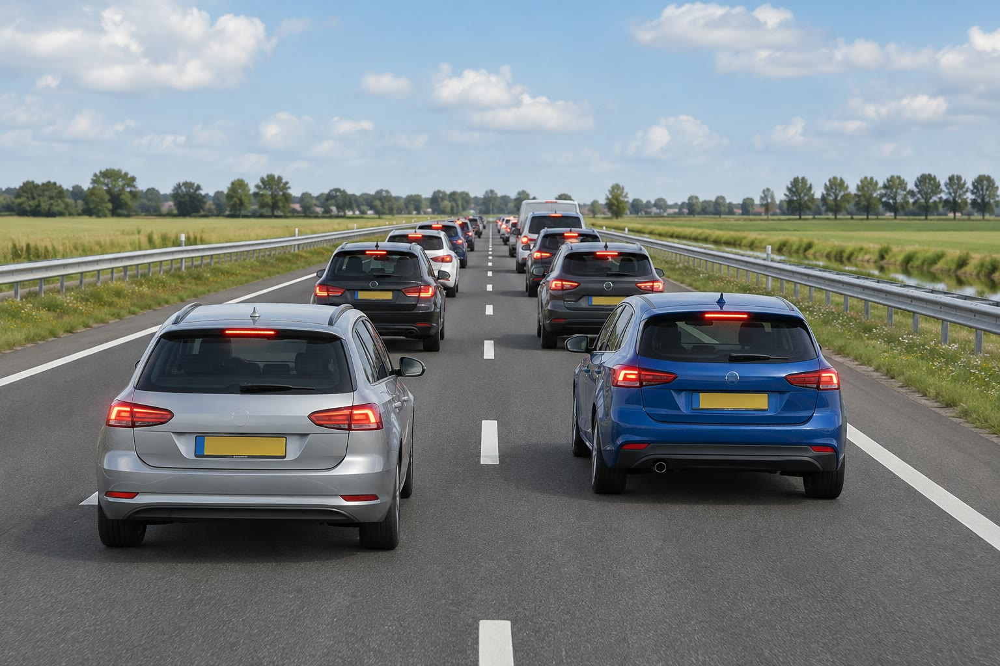
هنگامی که یک خط عبوری به پایان میرسد و خودروها باید در خط کناری ادغام شوند، فرهنگ رانندگی هلند انتظار دارد رانندگان تا انتهای خط در حال حذف پیش بروند و سپس بهنوبت و یکیدرمیان وارد خط اصلی شوند. این روش یک الزام قانونی در RVV نیست، اما در عمل بهطور یکپارچه اجرا میشود و با خطکشیهای جاده تقویت میگردد.
§ ۴ — ورود به تقاطعها
مهمترین قانون درباره تقاطعها.
رانندگان نباید تقاطع را مسدود کنند. یعنی تا زمانی که نتوانید تقاطع را بهطور کامل تخلیه کنید، وارد آن نشوید. اگر ترافیک جلو کند یا متوقف است و امکان عبور کامل وجود ندارد، پیش از تقاطع منتظر بمانید تا مسیر باز شود.
مسدود کردن تقاطع مانع حرکت ترافیک عمودبرمسیر میشود و یکی از شایعترین دلایل قفل شدن ترافیک در شهرهاست.

§ ۵ — حق تقدم
چه کسی اول عبور میکند — قواعد بنیادین حق تقدم در تقاطعها و تقاطعهای همسطح راهآهن.
در تقاطعها، تمامی رانندگان باید به رانندگانی که از سمت راست نزدیک میشوند حق تقدم بدهند. هنگامی که هیچ تابلو، چراغ راهنمایی یا قاعده دیگری خلاف آن را نشان ندهد، این قاعده پیشفرض برقرار است.
دو استثنا وجود دارد:
- رانندگان در جاده خاکی (غیرآسفالته) باید به رانندگان در جاده آسفالته حق تقدم بدهند — صرفنظر از اینکه از کدام سمت میآیند.
- در تقاطعی که به شکل دیگری کنترل نمیشود، رانندگان باید به تراموا حق تقدم بدهند. چراغهای راهنمایی، دستورات مأموران مجاز راهنمایی و رانندگی و تابلوهای ترافیکی مربوطه میتوانند ترتیب متفاوتی را تعیین کنند.

هنگام نزدیک شدن به تقاطع، به همین ترتیب از خود بپرسید: (۱) آیا مأمور راهنمایی و رانندگی حضور دارد؟ از دستورات او پیروی کنید. (۲) آیا چراغ راهنمایی فعال است؟ از آن پیروی کنید. (۳) آیا تابلوهای ترافیکی (جاده دارای حق تقدم، رعایت حق تقدم، ایست) وجود دارد؟ از آنها پیروی کنید. (۴) هیچیک از موارد بالا نیست؟ قواعد عادی حق تقدم را اجرا کنید: به رانندگان سمت راست حق تقدم بدهید و استثناهای قانونی از جمله تراموا و جاده آسفالته در برابر خاکی را لحاظ نمایید.
کاربر راه تنها زمانی مجاز است وارد تقاطع همسطح راهآهن شود که بتواند بلافاصله عبور کرده و تقاطع را بهطور کامل تخلیه کند. هرگز نباید وارد تقاطع راهآهن شوید مگر آنکه مطمئن باشید بدون توقف از کل آن عبور خواهید کرد.
در تقاطع همسطح راهآهن، تمامی کاربران راه باید اجازه دهند هرگونه وسیله نقلیه ریلی — قطار، تراموا، مترو — عبور کند و در این مدت تقاطع را کاملاً آزاد نگه دارند.

§ ۶ — کاروانهای نظامی و کاروانهای تشییع جنازه
کاربران راه از قطع کردن و عبور از میان کاروان نظامی یا کاروان خودرویی تشییع جنازه منع شدهاند. اگر چنین کاروانی در حال عبور از مسیر شماست، باید صبر کنید تا بهطور کامل بگذرد — حتی اگر حق تقدم با شما باشد.

§ ۷ — گردش کردن
نحوه راهنما زدن، قرارگیری در خط مناسب و رعایت حق تقدم هنگام گردش.
پیش از گردش، راننده میتواند در موقعیت مناسب قرار گیرد:
- گردش به راست: بهموقع و پیش از گردش، تا حد امکان به منتهیالیه سمت راست بروید.
- گردش به چپ: تا حد امکان به خط وسط جاده نزدیک شوید — و در خیابان یکطرفه، تا حد امکان به منتهیالیه سمت چپ بروید.
پیش از گردش، راننده باید با چراغ راهنما یا در صورت نبود چراغ راهنما با دست علامت بدهد.

رانندهای که قصد گردش دارد باید به این موارد حق تقدم بدهد:
- ترافیکی که در همان جاده از جهت مقابل نزدیک میشود.
- ترافیکی که در همان جاده به موازات او — در سمت چپ یا راست، یا بلافاصله پشت سرش — در حرکت است (از جمله عابران پیاده و دوچرخهسواران در مسیر مستقیم همان جاده).
رانندهای که به چپ میپیچد، باید به راننده روبهرویی که در همان تقاطع به راست میپیچد نیز حق تقدم بدهد.
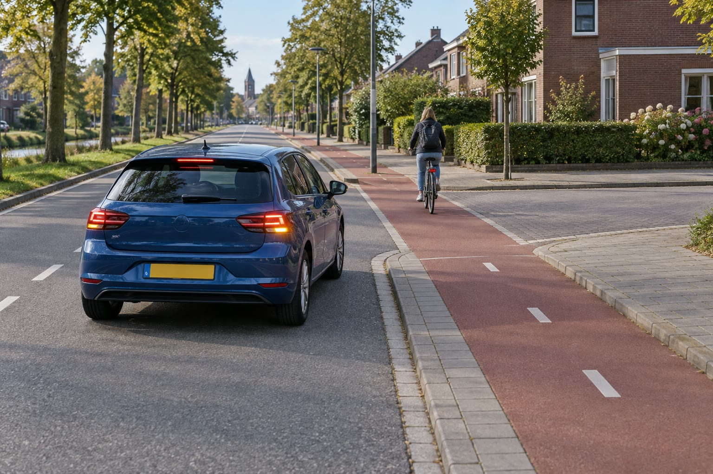
§ ۸ — محدودیتهای سرعت
اصل کلی، محدودیتهای استاندارد و سقف سرعت ویژه برای انواع خاص وسایل نقلیه.
پیش از هر عدد مشخصی برای محدودیت سرعت، یک اصل بالادستی وجود دارد: راننده همیشه باید بتواند در مسافتی که پیش روی خود میبیند — و مسیری که آزاد و باز است — وسیله نقلیه را متوقف کند. یعنی حتی اگر کمتر از سقف سرعت تابلو حرکت میکنید، چنانچه نتوانید متناسب با میدان دید خود بهموقع بایستید، سرعت شما بیش از حد زیاد است.
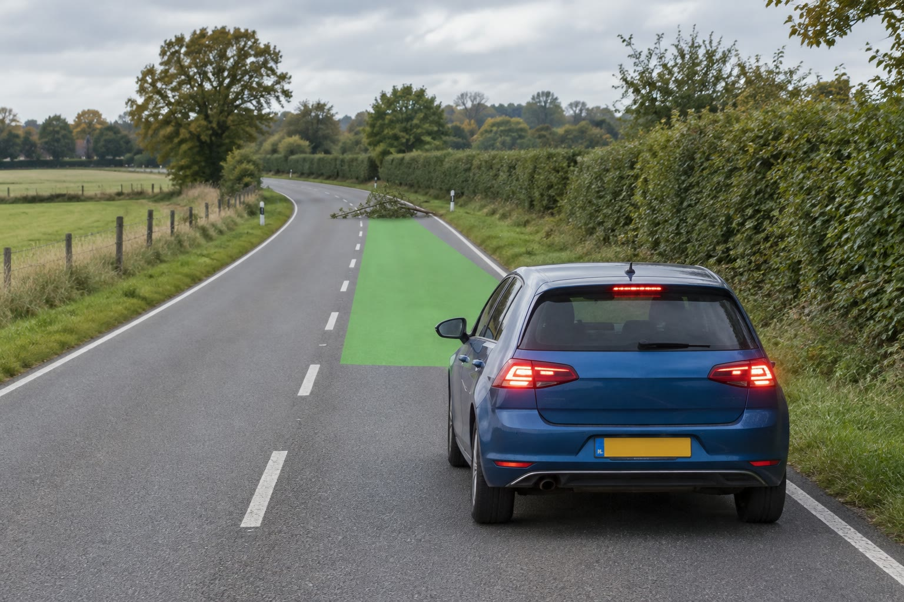
داخل محدوده شهری (Bebouwde kom)
در جاده
در سوارهرو
در مسیر دوچرخه/موپد
در مسیر دوچرخه
در پیادهرو / مسیر پیاده
خارج از محدوده شهری
| نوع وسیله نقلیه | آزادراه (Autosnelweg) | بزرگراه خودرورو (Autoweg) | سایر جادهها |
|---|---|---|---|
| وسایل نقلیه موتوری (سواری، ون) | مطابق تابلوی نصبشده — عموماً ۱۰۰ کیلومتر بر ساعت از ساعت ۰۶:۰۰ تا ۱۹:۰۰ در تقریباً تمام آزادراهها؛ بسیاری از قطعات از ۱۹:۰۰ تا ۰۶:۰۰ سرعت ۱۰۰، ۱۲۰ یا ۱۳۰ کیلومتر بر ساعت را مجاز میدارند | ۱۰۰ کیلومتر بر ساعت مگر آنکه تابلوها خلاف آن را نشان دهند | ۸۰ کیلومتر بر ساعت مگر آنکه تابلوها خلاف آن را نشان دهند |
| موپد / وسیله نقلیه موتوری معلولان — سوارهرو | — | — | ۴۵ کیلومتر بر ساعت |
| موپد / وسیله نقلیه معلولان — مسیر دوچرخه/موپد | — | — | ۴۰ کیلومتر بر ساعت |
| وسیله نقلیه معلولان — مسیر دوچرخه | — | — | ۴۰ کیلومتر بر ساعت |
| وسیله نقلیه موتوری معلولان و موپد سبک (snorfiets) — پیادهرو | — | — | ۶ کیلومتر بر ساعت |
محدودیت سرعت ویژه برای وسایل نقلیه خاص
| وسیله نقلیه | حداکثر سرعت | توضیحات |
|---|---|---|
| کامیونها، اتوبوسهای معمولی (غیر از T100)، کمپرهای بالای ۳٬۵۰۰ کیلوگرم | ۸۰ کیلومتر بر ساعت | صرفنظر از نوع جاده در خارج از محدوده شهری |
| اتوبوس T100 | ۱۰۰ کیلومتر بر ساعت | در آزادراهها و بزرگراههای خودرورو |
| برومموبیل (Brommobiel) | ۴۵ کیلومتر بر ساعت | همیشه |
| موپد سبک (Snorfiets) | ۲۵ کیلومتر بر ساعت | همیشه |
| خودروی سواری / ون / موتورسیکلت / وسیله نقلیه موتوری سهچرخ / اتوبوس T100 در حال کشیدن یدک تا ۳٬۵۰۰ کیلوگرم | ۹۰ کیلومتر بر ساعت | همراه با یدک (تریلر) |
| سایر وسایل نقلیه موتوری در حال کشیدن یدک | ۸۰ کیلومتر بر ساعت | همراه با یدک (تریلر) |
| تراکتورهای کشاورزی، وسایل نقلیه موتوری کندرو، ماشینآلات متحرک | ۲۵ کیلومتر بر ساعت | پیشفرض؛ ۴۰ کیلومتر بر ساعت در جادههای خارج از محدوده شهری یا معابر شهری مشخص |
محدودیتهای بالا باید همواره در کنار تابلوهای کنار جاده و تابلوهای الکترونیکی ماتریسی بالای راه سنجیده شوند. در آزادراههای هلند، سرعت مجاز به قطعه جاده و ساعت شبانهروز بستگی دارد. از ساعت ۰۶:۰۰ تا ۱۹:۰۰ تقریباً تمام آزادراهها به ۱۰۰ کیلومتر بر ساعت محدود هستند و برخی قطعات محدودیت ۸۰ یا ۱۳۰ کیلومتر بر ساعت دارند. از ساعت ۱۹:۰۰ تا ۰۶:۰۰ در بسیاری از بخشها سرعت ۱۰۰، ۱۲۰ یا ۱۳۰ کیلومتر بر ساعت مجاز است. همیشه از محدودیتی پیروی کنید که برای همان جاده و همان زمان نمایش داده میشود.
§ ۹ — توقف کوتاه (Stilstaan)
مکانهایی که توقف — حتی برای لحظهای کوتاه — در آنها ممنوع است.
راننده مجاز نیست وسیله نقلیه خود را در هیچیک از مکانهای زیر متوقف کند:
- در تقاطع یا تقاطع همسطح راهآهن
- روی خط دوچرخه، یا در سوارهرو در کنار خط دوچرخه
- روی گذرگاه عابر پیاده، یا در فاصله کمتر از ۵ متری آن
- در داخل تونل
- در کنار تابلوی ایستگاه اتوبوس — در امتداد خطکشی شطرنجی/بلوکی، یا در صورت نبود خطکشی در فاصله کمتر از ۱۲ متری تابلو
- در سوارهرو در کنار خط ویژه اتوبوس
- در کنار خط زرد ممتد

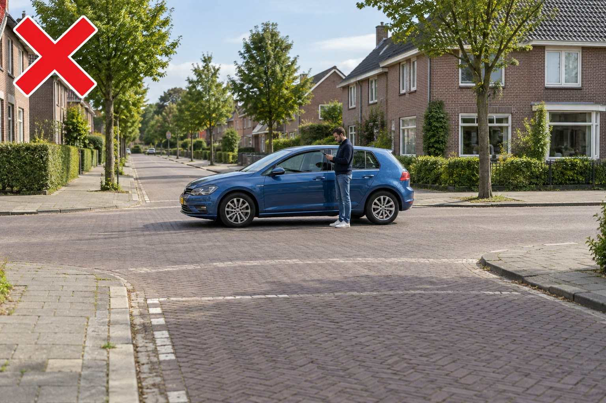
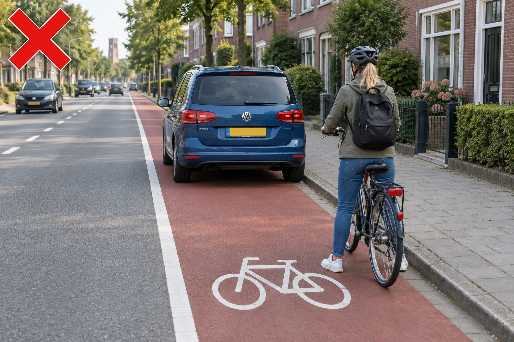


§ ۱۰ — پارک کردن (Parkeren)
کجا مجاز به رها کردن خودروی خود نیستید — و قوانین فضاهای پارک علامتگذاریشده.
پارک کردن در مکانهای زیر ممنوع است:
- در فاصله کمتر از ۵ متری تقاطع
- جلوی ورودی یا خروجی ملک و پارکینگ (راهروی خودرو)
- در سوارهروِ جاده دارای حق تقدم در خارج از محدوده شهری
- در فضای پارک اختصاصی، اگر وسیله نقلیه شما متعلق به گروه نشاندادهشده روی تابلو نباشد
- در فضای پارک، به شیوه یا برای هدفی متفاوت از آنچه روی تابلو مشخص شده است
- در مکان یا زمانی که پارک کردن به موجب تابلو ممنوع شده باشد
- در امتداد خط زرد منقطع (پارک ممنوع)
- روی گذرگاه عابر پیاده یا در فاصله کمتر از ۵ متری آن (مانند توقف کوتاه)
- روی مسیر دوچرخه یا مسیر پیاده
- در کنار یک خودروی پارکشده دیگر (پارک دوبله)
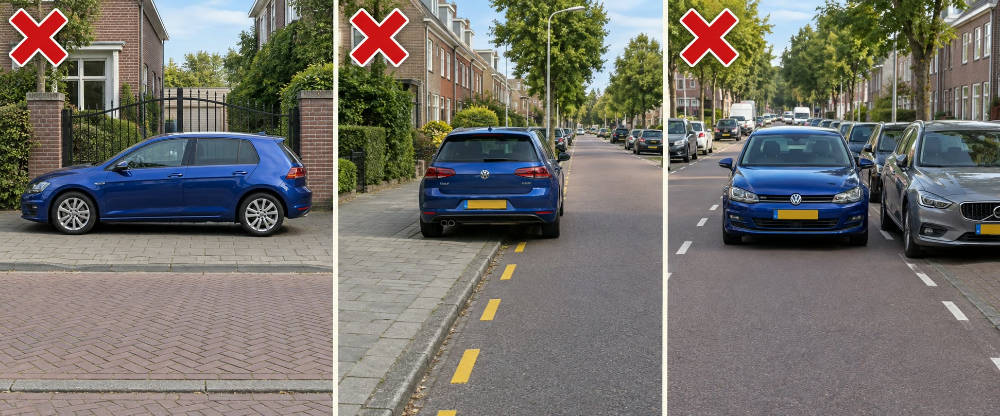
در جایی که تابلو نشاندهنده پارک زماندار در منطقه آبی (blauwe zone) است، راننده باید یک صفحه زمان پارک (parkeerschijf) که زمان ورود را نشان میدهد قرار دهد. این صفحه باید از پشت شیشه جلو بهوضوح قابل دیدن باشد. پارک کردن بیش از مدت مجاز درجشده روی تابلو ممنوع است.

در مناطقی که پارک پولی برقرار است، راننده باید روش پرداخت و شرایط اعلامشده برای آن مکان را رعایت کند. پرداخت ممکن است از طریق دستگاه پارکومتر، اپلیکیشن پارکینگ یا روش مجاز دیگر انجام شود. قرار دادن بلیت کاغذی تنها زمانی لازم است که سامانه محلی آن را مطالبه کند. پارک کردن بدون پرداخت معتبر یا فراتر از زمان پرداختشده ممنوع است.
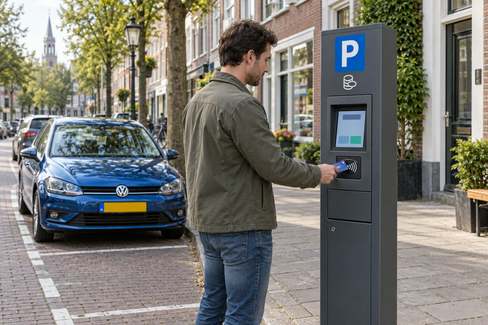
تمام مکانهای ذکرشده در §۹ (توقف کوتاه) برای پارک کردن نیز ممنوع هستند؛ اما پارک کردن مکانهای ممنوعه بسیار بیشتری هم علاوه بر آنها دارد. مکانی که توقف کوتاه برای سوار و پیاده کردن را مجاز میداند ممکن است همچنان پارک کردن را ممنوع کند. همیشه تابلوها را بررسی کنید.
§ ۱۱ — قرار دادن دوچرخهها و موپدها
دوچرخهها و موپدها باید بهگونهای قرار داده شوند که مانع سایر استفادهکنندگان راه نشوند. نباید آنها را در سوارهرو، مسیر دوچرخه، پیادهرو یا مسیر پیاده طوری گذاشت که جلوی عبور آزادانه عابران پیاده، دوچرخهسواران یا دیگران را بگیرد. در جاهایی که پارکینگ اختصاصی دوچرخه وجود دارد، باید از همان فضاها استفاده شود.

§ ۱۲ — علائم هشدار و نشانههای شناسایی
چگونه قصد خود را علامت بدهید — و علائم و نشانههای شناسایی قانونی در موقعیتهای ویژه.
رانندگان هنگام قصد تغییر جهت یا جابهجایی عرضی مهم باید علائم روشن و بهموقع بدهند. علامت دادن با استفاده از چراغ راهنما (richtingaanwijzer) انجام میشود. اگر وسیله نقلیه فاقد چراغ راهنما باشد، باید از علامت دست استفاده شود. علامت باید پیش از شروع مانور داده شود — نه در حین انجام آن.
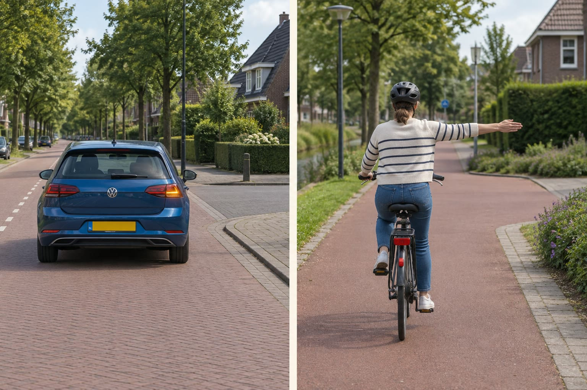
وسیله نقلیه دارای حق تقدم (voorrangsvoertuig) بهطور همزمان از چراغ چشمکزن آبی و آژیر استفاده میکند. این علائم تنها زمانی مجازند که خودرو در حال انجام مأموریت فوری و اضطراری باشد. سایر کاربران راه باید بلافاصله و بهطور کامل به خودرویی که هر دو علامت را دارد راه بدهند.
چراغ آبی چشمکزن و آژیر ممکن است بدون آنکه خودرو در حکم وسیله نقلیه دارای حق تقدم باشد نیز به کار روند — مثلاً خودروی پلیسی که به رانندهای دستور ایست میدهد. در این حالت، قواعد کامل حق تقدم اضطراری خودبهخود اعمال نمیشود، اما کاربران راه همچنان باید واکنش مناسب نشان دهند.
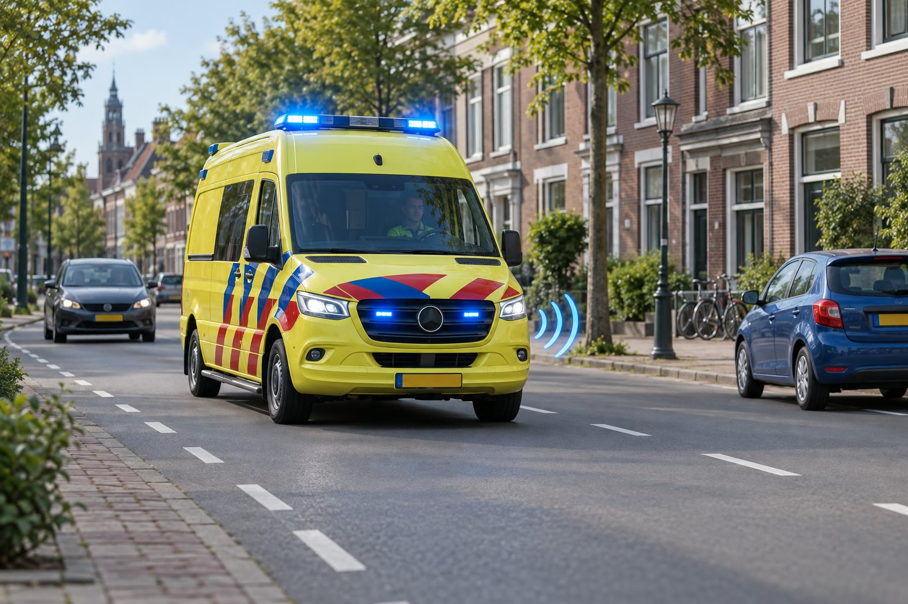
کاروانهای نظامی نشانههای شناسایی رسمی تعیینشده توسط وزیر زیرساخت و وزیر دفاع را نصب میکنند. این نشانهها کاروان نظامی را از ترافیک عادی متمایز میسازند و به سایر رانندگان هشدار میدهند که قطع کردن کاروان ممنوع است.

کاروان خودرویی تشییع جنازه رسمیتیافته از علائم شناسایی قانونی مقرر استفاده میکند. این علائم شامل دو پرچم مثلثی سیاهرنگ است که به شکل مقرر روی خودروهای شرکتکننده نصب میشوند. این نشانهها را با چراغهای گردان نارنجی یا بنفش اشتباه نگیرید.
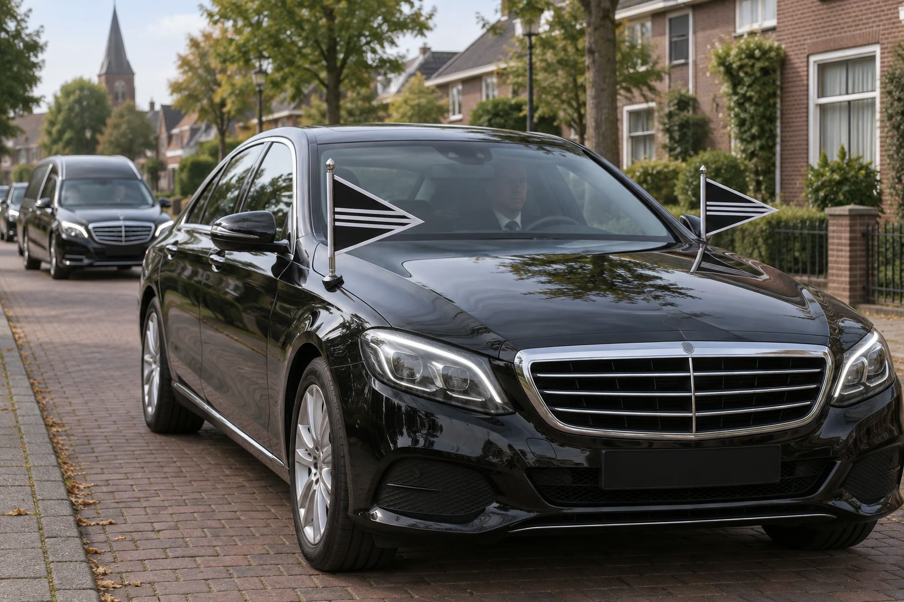
رانندگان تنها برای دفع خطر قریبالوقوع مجاز به استفاده از علائم صوتی (بوق) یا علامت با چراغ (نور بالا زدن لحظهای) هستند. این قانون هم در داخل و هم در خارج از محدوده شهری برقرار است. بنابراین نباید از بوق یا چراغ زدن صرفاً برای سلام و احوالپرسی، ابراز عصبانیت یا اعلام قصد سبقت عادی استفاده کرد.

§ ۱۳ — چراغها هنگام حرکت
کدام چراغها و در چه زمانی هنگام حرکت وسیله نقلیه باید روشن باشند.
وسایل نقلیه موتوری باید در شب و در شرایط کاهش دید — مانند مه، باران، برف یا گرگومیش هوا — از چراغهای نور پایین (dimlichten) استفاده کنند. در طول روز و در شرایط دید مناسب، اگر خودرو مجهز به چراغ روشنایی روز (dagrijverlichting) باشد، همین چراغها کافی است. چراغهای جلو نباید چشم سایر کاربران راه را خیره کنند.

دوچرخهای که در شب یا در شرایط دید کم رانده میشود باید دارای موارد زیر باشد:
- یک چراغ جلوی سفید یا زرد بدون حالت چشمکزن (ثابت)
- یک چراغ عقب قرمز بدون حالت چشمکزن (ثابت)
- یک بازتابنده (شبرنگ) عقب قرمز (که مثلثی نباشد)
- بازتابندههای زرد/کهربایی روی رکابها
- بازتابندههای سفید یا زرد روی چرخها/طوقهها یا تایرها

تمامی وسایل نقلیه باید در شب و در شرایط دید کم چراغهای عقب قرمز روشن داشته باشند. افزون بر این، باید دارای بازتابندههای الزامی باشند — محل و رنگ آنها بسته به نوع وسیله نقلیه متفاوت است، اما اصل کلی یکسان است: وسیله نقلیه شما باید از پشت سر کاملاً قابل رؤیت باشد.

چراغهای مهشکن جلو زمانی مجاز به استفاده هستند که مه، بارش برف یا باران به شکل جدی دید را کاهش دهد. چراغ مهشکن عقب تنها زمانی مجاز است که مه یا بارش برف شعاع دید را به کمتر از ۵۰ متر برساند؛ استفاده از آن صرفاً به دلیل باران شدید ممنوع است. به محض برطرف شدن این شرایط، چراغهای مهشکن را خاموش کنید.

چراغ گردان یا چشمکزن کهربایی/زرد در موقعیتهای مشخصشده در قانون برای هشدار دادن به سایر کاربران راه درباره یک وضعیت خاص یا خطرناک به کار میرود؛ برای نمونه در برخی عملیات راهداری، امداد خودرو و یدککشی یا حمل بارهای ترافیکی فوقسنگین. این چراغ به وسیله نقلیه حق تقدم نمیدهد.

§ ۱۴ — چراغها هنگام توقف
الزامات روشنایی زمانی که وسیله نقلیه شما متوقف یا پارک شده است.
در شب — و همچنین در طول روز زمانی که دید به شدت کاهش یافته است — وسیله نقلیه موتوری متوقف در سوارهرو خارج از محدوده شهری باید چراغهای پارک/موقعیت مقرر در جلو و عقب را روشن نگه دارد. همین الزام روشنایی در نوارهای پارک، خلیجکهای پارک، خطوط اضطراری و توقفگاههای اضطراری در امتداد آزادراهها و بزرگراههای خودرورو نیز برقرار است.
در داخل محدوده شهری، این الزام خاص روشنایی در حالت توقف به همان شکل اعمال نمیشود؛ با این حال همیشه مطمئن شوید که خودرو در مکانی ایمن و قانونی قرار گرفته و به اندازه کافی دیده میشود.

§ ۱۵ — چراغهای ویژه
چراغ چشمکزن یا گردان آبی تنها توسط وسایل نقلیهای قابل استفاده است که رسماً مجوز آن را دارند — عمدتاً آمبولانسها، خودروهای آتشنشانی و خودروهای پلیس. این چراغ نشاندهنده وضعیت اضطراری است و در ترکیب با آژیر، وسیله نقلیه دارای حق تقدم ایجاد میکند.

چراغ چشمکزن سبز ویژه خودروی فرماندهی مرتبط با عملیات مجاز پلیس، آتشنشانی یا اورژانس است. این چراغ نقش فرماندهی صحنه را مشخص میکند و بهخودیخود خودرو را به وسیله نقلیه دارای حق تقدم تبدیل نمیکند و حق تقدمی به وجود نمیآورد.
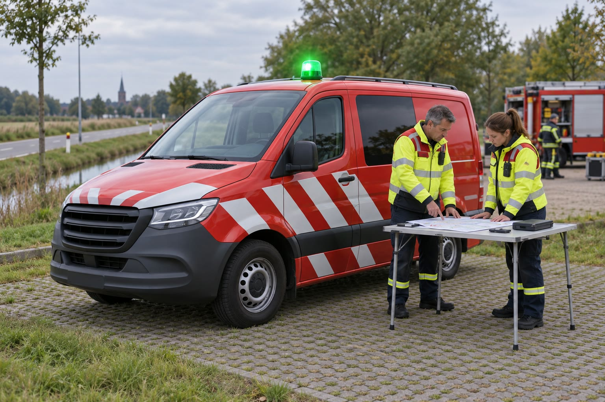
§ ۱۶ — آزادراهها و بزرگراههای خودرورو
قوانین ویژهای که فقط در آزادراهها (autosnelwegen) و بزرگراههای خودرورو (autowegen) اعمال میشوند.
استفاده از آزادراه برای کاربران راه زیر ممنوع است:
- عابران پیاده
- دوچرخهسواران
- راکبان موپد (هم bromfiets و هم snorfiets)
- رانندگان وسایل نقلیه معلولان
- سوارکاران و هدایتکنندگان حیوانات
- وسایل نقلیهای که از نظر ساختار نمیتوانند یا قانوناً مجاز نیستند حداقل ۶۰ کیلومتر بر ساعت حرکت کنند
- ماشینآلات کشاورزی و وسایل نقلیه موتوری کندرو
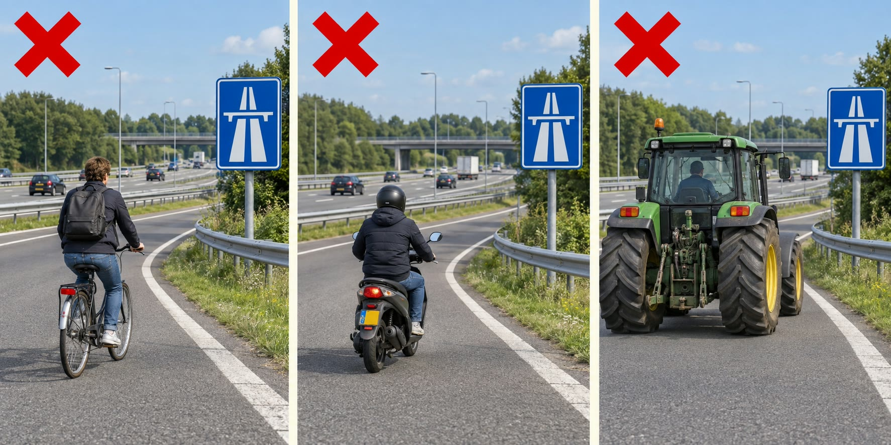
در آزادراه اعمال زیر ممنوع است:
- توقف کردن، دور زدن یا دندهعقب رفتن
- عبور از جداکننده میانی (رفیوژ وسط)
- رانندگی روی شانه اضطراری (خط اضطراری) — مگر در شرایط اضطراری، یا زمانی که رسماً بهعنوان خط ویژه ساعات اوج ترافیک باز شده باشد
- رانندگی روی محدوده هاشورخورده هدایت ترافیک (verdrijvingsvlak)
ورود و خروج تنها از طریق خطوط ورودی (invoegstroken) و خطوط خروجی (uitrijstroken) تعیینشده مجاز است.
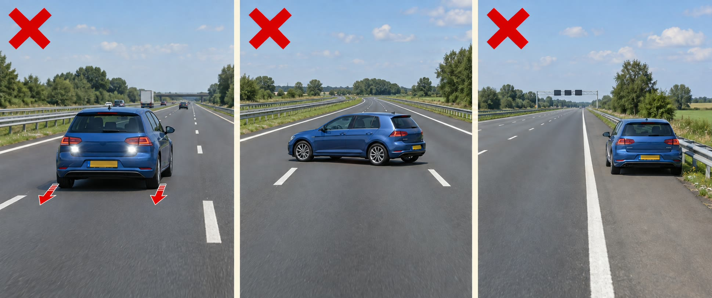
بزرگراه خودرورو (تابلوی G3) مخصوص وسایل نقلیه موتوری است که از نظر ساختار بتوانند و مجاز باشند حداقل ۵۰ کیلومتر بر ساعت حرکت کنند. این راه با آزادراه یکسان نیست و ممکن است دارای تقاطعهای همسطح یا ترتیبات دسترسی متفاوتی باشد. همیشه از تابلوها و خطکشیهای همان جاده پیروی کنید.

در ساعات شلوغی، شانه اضطراری برخی آزادراهها بهعنوان یک خط عبوری اضافی باز میشود که به آن spitsstrook میگویند. تابلوهای الکترونیکی بالای جاده باز یا بسته بودن آن را مشخص میکنند. هنگامی که باز است، میتوانید مانند یک خط عادی از آن استفاده کنید. هنگامی که تابلوها ضربدر قرمز نشان میدهند، خط بسته است و نباید در آن رانندگی کنید.
§ ۱۷ — مناطق مسکونی (Erven)
قوانین ویژه برای محوطههایی که عابران پیاده و وسایل نقلیه از یک فضای مشترک استفاده میکنند.
در داخل یک منطقه مسکونی (erf)، رانندگان مجاز نیستند سریعتر از ۱۵ کیلومتر بر ساعت حرکت کنند. این عدد حداکثر سرعت قانونی است. از آنجا که عابران پیاده میتوانند از تمام عرض معبر استفاده کنند، رانندگان باید هوشیاری ویژهای داشته باشند و بتوانند به شکل ایمن واکنش نشان دهند.

در داخل erf، عابران پیاده مجازند از تمام عرض راه استفاده کنند. البته این موضوع یک قاعده مطلق ایجاد نمیکند که عابران پیاده همیشه و خودبهخود نسبت به هر رانندهای حق تقدم داشته باشند؛ قواعد عادی حق تقدم و مانورهای ویژه همچنان اهمیت دارند. با این حال رانندگان باید رفتار خود را با ماهیت فضای مشترک erf تطبیق دهند و از ایجاد خطر بپرهیزند.
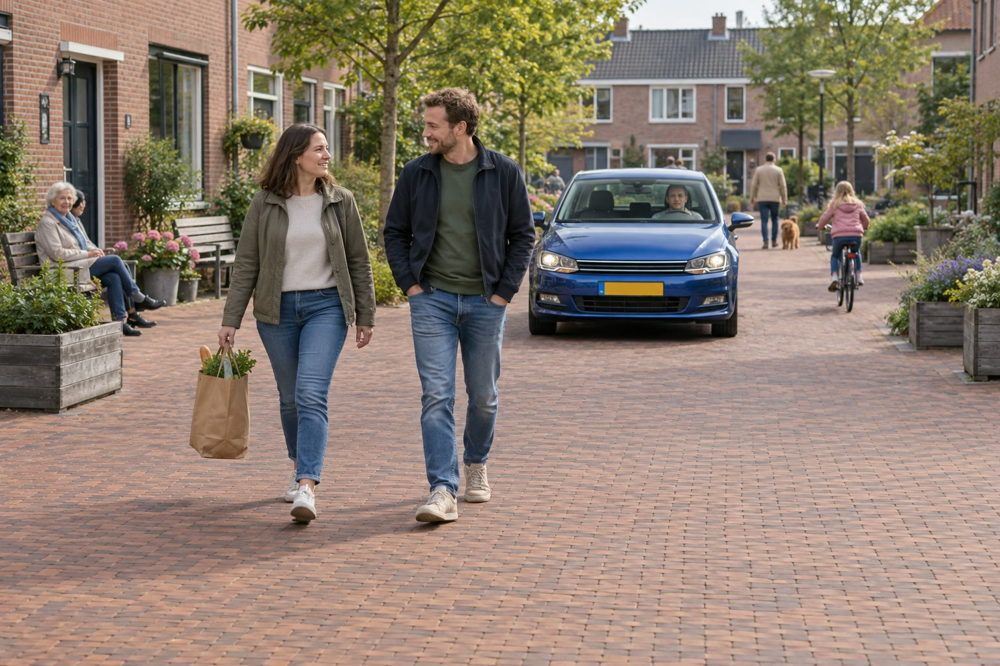
پارک کردن در داخل erf تنها در فضاهای پارک مشخص و علامتگذاریشده (معمولاً با حرف P) مجاز است. شما مجاز به پارک کردن در هیچ بخش دیگری از erf نیستید — نه روی سطح معبر و نه در محوطه مشترک پیادهروی.

هنگام خروج از یک منطقه مسکونی (erf) و ورود به یک جاده عادی، رانندگان باید به تمام ترافیک موجود در آن جاده حق تقدم بدهند — چه از سمت چپ و چه از سمت راست (شامل عابران پیاده و دوچرخهسواران).

منطقه erf با تابلوی آبیرنگی که شکل سفید یک خانه، خودرو و عابر پیاده را نشان میدهد آغاز میشود و با همان تابلو همراه با یک خط مورب قرمز پایان مییابد. در تمام محدوده بین این دو تابلو، قواعد ویژه بالا برقرار است.
§ ۱۸ — میدانها (فلکهها)
حق تقدم در میدان توسط تابلوها و خطکشیهای سطح راه تعیین میشود. در بیشتر میدانهای هلند، تابلوهای رعایت حق تقدم و دندانههای کوسه (haaientanden) رانندگان ورودی را ملزم میکنند به وسایل نقلیهای که از قبل داخل میدان هستند حق تقدم بدهند. اگر هیچ تابلو یا خطکشی حق تقدمی میدان را تنظیم نکند، قاعده عادی حق تقدم به راست اعمال میشود و در آن حالت ترافیک ورودی از سمت راست میتواند حق تقدم داشته باشد.
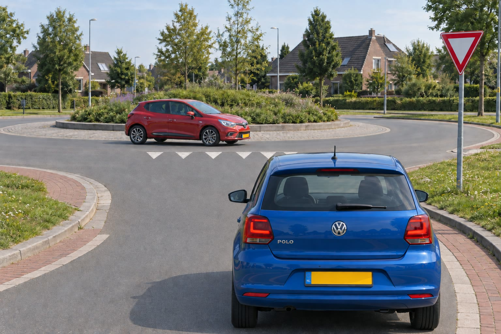
هنگام خروج از میدان، درست پیش از خروجی مورد نظر خود راهنمای راست بزنید. هنگام ورود به میدان یا عبور از خروجیهایی که قصد وارد شدن به آنها را ندارید نیازی به راهنما زدن نیست (مگر تغییر خط). لحظه کلیدی برای راهنما زدن درست پیش از خروج است تا رانندگان منتظر ورود متوجه خروج شما شوند.

§ ۱۹ — عابران پیاده
رانندگان موظفند به عابران پیادهای که روی گذرگاه عابر پیاده هستند یا آشکارا قصد ورود به آن را دارند حق تقدم بدهند. این قانون در تمام خطکشیهای عابر پیاده (زبرا) جاری است. عابری که پای خود را روی خطکشی گذاشته یا کنار لبه آن آشکارا منتظر عبور ایستاده است، حق تقدم دارد.
دوچرخهسواران نیز در گذرگاههای ترکیبی که هم با خطوط زبرا و هم با نماد دوچرخه مشخص شدهاند، حق تقدم دارند.

§ ۲۰ — وسایل نقلیه دارای حق تقدم
هنگامی که یک وسیله نقلیه دارای حق تقدم — خودرویی که همزمان چراغ چشمکزن آبی و آژیر روشن دارد — نزدیک میشود، سایر کاربران راه باید فوراً به آن راه بدهند. به این معنا که:
- با سرعت و ایمنی کامل به کنار جاده بروید
- در صورت لزوم توقف کنید
- مسیر حرکت خودروی امدادی را مسدود نکنید
- این وظیفه حتی در صورتی برقرار است که ناچار شوید برای لحظهای کنار خط زرد یا مکانی که در شرایط عادی توقف در آن ممنوع است بایستید
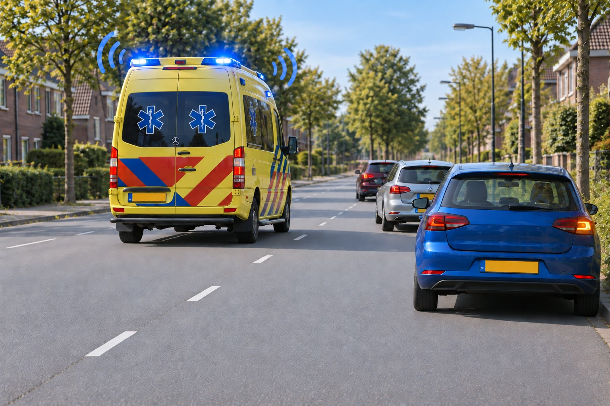
§ ۲۱ — حیوانات رهاشده در راه
هنگام مواجهه با حیوانات رهاشده در جاده یا نزدیکی آن — مانند دامها، اسبها یا سگها — تمامی کاربران راه باید سرعت خود را کاهش داده و اقدامات احتیاطی لازم را انجام دهند. رفتار حیوانات غیرقابل پیشبینی است و حرکات ناگهانی در آنها فراوان رخ میدهد. به آرامی و با بیشترین فاصله جانبی ممکن عبور کنید. در نزدیکی حیوانات بوق نزنید، زیرا ممکن است بیشتر رم کنند.

§ ۲۲ — مسافران در حال سوار و پیاده شدن
هنگامی که تراموا یا اتوبوس متوقف شده و مسافران در حال سوار یا پیاده شدن هستند (در جایی که جزیره ایستگاه وجود ندارد و مسافران باید از سوارهرو بگذرند)، سایر کاربران راه باید به آن مسافران حق تقدم بدهند. مسافرانی که از تراموا یا اتوبوس پیاده شده و از عرض سوارهرو عبور میکنند حق تقدم دارند — حتی اگر گذرگاه خطکشیشده عابر پیاده در آنجا نباشد.

§ ۲۳ — یدککشی وسیله نقلیه
هنگامی که یک وسیله نقلیه موتوری وسیله نقلیه موتوری دیگری را یدک میکشد، فاصله میان عقب خودروی یدککش تا جلوی خودروی یدکشونده نباید بیش از ۵ متر باشد. اتصال یدککشی باید ایمن بوده و خودروی یدکشونده کاملاً قابل کنترل باقی بماند.
مقررات RVV درباره یدککشی، محدودیت سرعت کلی ۲۵ کیلومتر بر ساعت تعیین نمیکند؛ بنابراین عدد ۲۵ کیلومتر بر ساعت را بهعنوان یک قانون عمومی یدککشی در هلند حفظ نکنید. در آزادراهها و بزرگراههای خودرورو، قوانین جداگانه دسترسی و ایمنی نیز باید رعایت شوند و موقعیتهای ناایمن یا نامناسب باید به خدمات امداد خودرو حرفهای سپرده شوند.
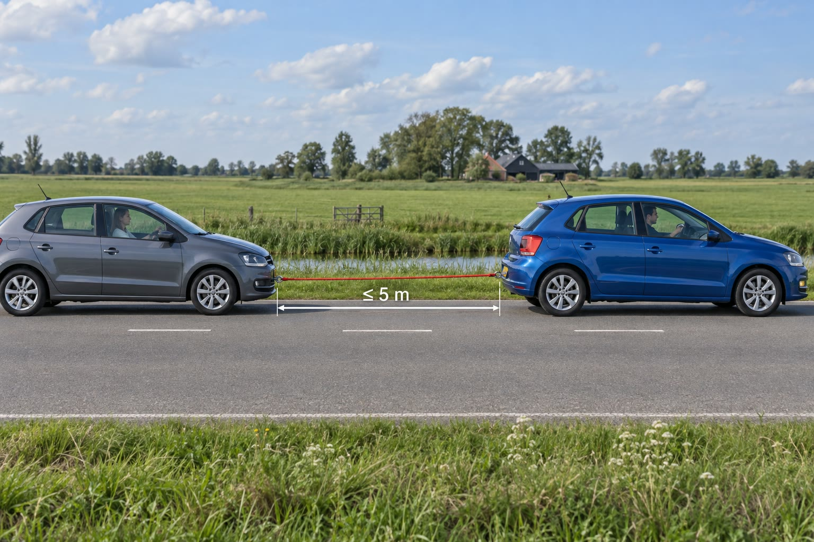
§ ۲۴ — مانورهای ویژه
دندهعقب رفتن، دور زدن و سایر مانورهایی که نیازمند دقت مضاعف هستند.
پیش از انجام هرگونه مانور ویژه (bijzondere manoeuvre) — مانند دندهعقب رفتن، دور زدن (U-turn)، خروج از فضای پارک، حرکت مجدد از کنار جدول، تغییر خط و ورود یا خروج از ملک — راننده باید ابتدا به تمام ترافیک دیگر راه بدهد (شامل عابران پیاده و دوچرخهسواران). هیچ مانور ویژهای نباید آغاز شود اگر کاربر دیگری را مجبور به تغییر سرعت یا تغییر مسیر کند.

حرکت با دندهعقب تنها زمانی مجاز است که بتوان آن را بهصورت ایمن و بدون ایجاد مزاحمت برای سایر کاربران راه انجام داد. باید پشت سر خود را بررسی کنید — هم از آینهها استفاده کنید و هم از بالای شانه نگاه کنید. دندهعقب رفتن با سرعت زیاد یا در مسافت طولانی در معابر عمومی مجاز نیست.

دور زدن (keermanoeuvre) تنها زمانی مجاز است که بتوان آن را بهصورت ایمن، بدون سد معبر برای سایر کاربران راه و بدون به خطر انداختن کسی انجام داد. دور زدن در آزادراهها و بزرگراههای خودرورو ممنوع است و ممکن است با تابلوهای خاص نیز ممنوع شود.

§ ۲۵ — صدای غیرضروری
ایجاد صدای غیرضروری با وسیله نقلیه ممنوع است. این مورد شامل گاز دادن بیمورد به موتور، بوق زدن مکرر برای دلایل غیرایمنی و سیستمهای اگزوز بیش از حد پرصدا میشود. بوق صرفاً یک ابزار هشدار ایمنی است — نه وسیله ارتباطی یا ابراز کلافگی.

§ ۲۶ — مثلث احتیاط
به همراه داشتن مثلث احتیاط در خودرو در هلند جزء تجهیزات اجباری نیست. اما اگر یک وسیله نقلیه موتوری متوقف دارای بیش از دو چرخ، یا یک یدک (تریلر)، مانعی ایجاد کند که ممکن است رانندگان عبوری بهموقع متوجه آن نشوند، باید به آنها هشدار داده شود. این کار را میتوان با چراغهای فلاشر (چشمکزن خطر) خودرو یا با مثلث احتیاط انجام داد. اگر چراغهای فلاشر روشن و فعال باشند، نیازی به گذاشتن مثلث احتیاط نیست. هنگام استفاده از مثلث احتیاط، آن را در فاصله حدود ۳۰ متری خودرو و در جهتی که ترافیک نزدیک میشود قرار دهید.
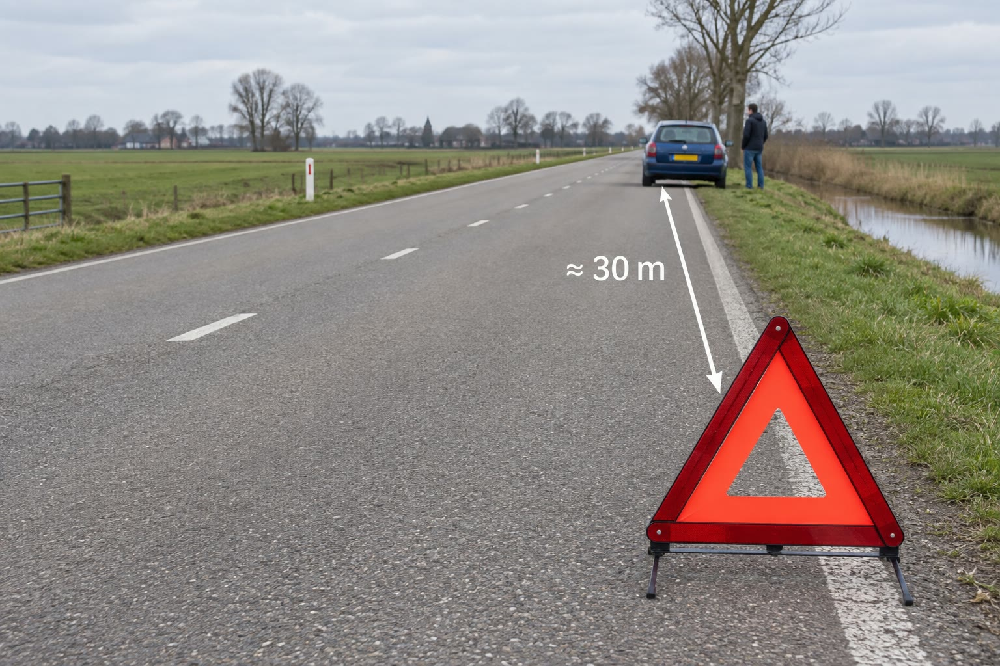
§ ۲۶a — محل نشستن
سرنشینان تنها مجازند روی صندلیهای مخصوص و تعیینشده در داخل یا روی وسیله نقلیه بنشینند. ایستادن در خودروی در حال حرکت، نشستن در صندوق عقب یا قرار گرفتن در محلی که برای سرنشین طراحی نشده ممنوع است، مگر آنکه وسیله نقلیه به شکل ویژه برای آن منظور طراحی شده باشد (مانند برخی اتوبوسها).

§ ۲۷ — کمربند ایمنی و صندلی کودک
تمامی سرنشینان وسیله نقلیه موتوری هنگام حرکت خودرو موظفند کمربند ایمنی ببندند. مسئولیت اطمینان از بسته شدن صحیح کمربند یا سیستم ایمنی مسافران زیر ۱۸ سال بر عهده راننده است. کمربند ایمنی باید بهدرستی بسته شود — از روی شانه و قفسه سینه رد شود و زیر بغل قرار نگیرد.

کودکان با قد کمتر از ۱٫۳۵ متر عموماً باید از یک سیستم نگهدارنده کودک (صندلی کودک) استاندارد و تأییدشده که متناسب با کودک و بهدرستی نصب شده باشد استفاده کنند. کودکان میتوانند در صندلی کودک تأییدشده در ردیف جلو یا عقب حمل شوند. استفاده از صندلی کودک رو به عقب روی صندلی مجهز به کیسه هوای جلو (ایربگ) تنها در صورتی مجاز است که آن کیسه هوا غیرفعال شده باشد.

برخی افراد از الزام بستن کمربند ایمنی معاف هستند — برای مثال کسانی که گواهی پزشکی مبنی بر عدم امکان بستن کمربند دارند، رانندگان هنگام حرکت با دندهعقب و برخی مشاغل خاص در شرایط مشخص. معافیتهای پزشکی روی کارت ویژهای درج میشوند که باید همراه فرد در خودرو باشد.
§ ۲۸ — کلاه ایمنی
راکب و هر ترکنشین موتورسیکلت یا موپد (bromfiets) موظفند در تمام مدت حرکت وسیله نقلیه کلاه ایمنی استاندارد و تأییدشده بر سر بگذارند که بند آن بهدرستی بسته شده باشد.
راکبان موپد سبک (snorfiets) و ترکنشینان آنها نیز باید کلاه ایمنی تأییدشده بپوشند. راکب snorfiets میتواند از کلاه ایمنی تأییدشده موپد یا کلاه ایمنی تأییدشده اسپید-پدلک (speed-pedelec) استفاده کند. راکبان و ترکنشینان اسپید-پدلک نیز مشمول الزام کلاه ایمنی تأییدشده هستند.
معافیتهای خاص مربوط به نوع وسیله نقلیه تنها در مواردی وجود دارند که قانون صراحتاً پیشبینی کرده باشد، مانند برخی وسایل نقلیه دارای کابین ایمنی سرپوشیده تأییدشده (کمربنددار). این موارد را بهعنوان معافیت شخصی عمومی از کلاه ایمنی تلقی نکنید.

§ ۲۹ — کودکان روی دوچرخه و موپد
کودکان زیر ۸ سال که روی دوچرخه، موپد سبک (snorfiets) یا موپد (bromfiets) حمل میشوند باید دارای محل نشستن ایمنی باشند که تکیهگاه کافی برای پشت، دستها و پاها فراهم کند — مانند یک صندلی کودک مناسب. کودکانی که روی bromfiets یا snorfiets سوار میشوند باید الزامات کلاه ایمنی مربوطه را نیز رعایت کنند.
تمرکز قانون بر نشیمنگاه ایمن و دارای تکیهگاه مناسب است؛ در قوانین ترافیکی هلند قاعده کلیای وجود ندارد که حمل بیش از یک کودک روی دوچرخه را مطلقاً ممنوع کند، مشروط بر آنکه تعداد سرنشینان با طراحی وسیله نقلیه و استفاده ایمن از آن سازگار باشد.
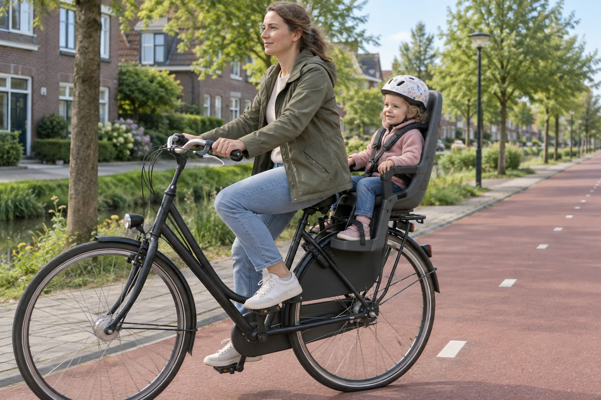
§ ۳۰ — تلفن همراه هنگام رانندگی
نگه داشتن (در دست گرفتن) تلفن همراه — یا هر دستگاه الکترونیکی ارتباطی/اطلاعاتی قابل حمل دیگر — هنگام رانندگی ممنوع است. این قانون شامل تمام رانندگان میشود: رانندگان خودرو، دوچرخهسواران، راکبان موپد و سایر رانندگان.
این ممنوعیت ناظر بر در دست گرفتن دستگاه الکترونیکی سیار در حین رانندگی است. استفاده بدون دخالت دست (هندزفری) در اصل برای رانندگان — از جمله دوچرخهسواران و راکبان موپد — مجاز است، مشروط بر آنکه دستگاه در دست گرفته نشود و استفاده از آن خطری ایجاد نکند یا مانع ترافیک نشود. بنابراین استفاده از گوشی که محکم روی پایه نگهدارنده نصب شده بدون در دست گرفتن مجاز است، اما حفظ تمرکز کامل بر راه همچنان ضروری است.
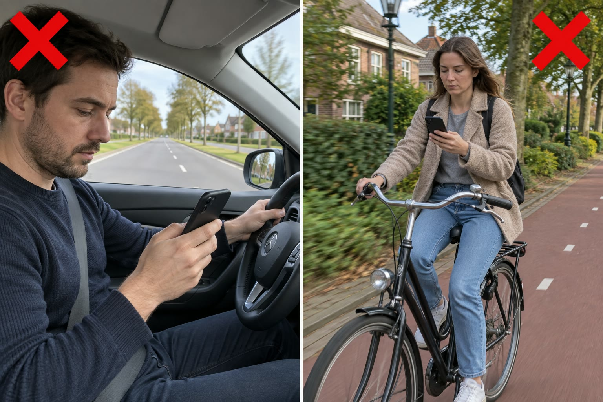
اغلب تصور میشود ممنوعیت تلفن همراه فقط مخصوص رانندگان خودرو است، اما این قانون شامل تمام رانندگان وسایل نقلیه از جمله دوچرخهسواران است. دوچرخهسواری با گوشی در دست ممنوع بوده و جریمه نقدی به همراه دارد.
§ ۳۱ — حمل مسافر در یدک و فضای بار
بهطور کلی حمل مسافر در یدکها (تریلرها و کاروانها)، در فضای بار خودرو، یا در کفی روباز کامیون و وانت ممنوع است. مسافران همیشه باید در کابین سرپوشیده مخصوص سرنشین سفر کنند — نه در داخل یا روی یدکی که کشیده میشود.
استثناهای مشخصی برای برخی ماشینآلات کشاورزی، وسایل نقلیه مورد استفاده در گردشهای سازمانیافته دارای مجوز ویژه و خودروهای تاریخی تحت نظارت وجود دارد که نیازمند مجوزها و شرایط خاص قانونی هستند.

فصل ۱ قواعد اصلی و کاربردی رفتوآمد در راه را پوشش میدهد: کجا برانیم، چگونه علامت بدهیم، چه زمانی حق تقدم بدهیم، محدودیتهای سرعت چگونه کار میکنند، چه جاهایی توقف کوتاه یا پارک کردن ممنوع است و چه الزامات ایمنیای برقرارند. اصول کلیدی عبارتاند از: حرکت در منتهیالیه سمت راست، حق تقدم دادن به رانندگان سمت راست در تقاطعهای همارزش بدون علائم، رعایت حق تقدم تراموا در مواردی که قواعد عادی ایجاب میکنند، مسدود نکردن تقاطعها، راهنما زدن پیش از تغییر مسیرهای عرضی مهم، الزامات کمربند و کلاه ایمنی و ممنوعیت در دست گرفتن دستگاه الکترونیکی سیار هنگام رانندگی.
در سؤالات مربوط به سرعت، میان سقف پیشفرض قانونی و عددی که عملاً روی تابلوهای جاده نمایش داده میشود تفاوت قائل شوید؛ بهویژه در آزادراهها که سرعت مجاز به قطعه جاده، تابلوها و ساعت شبانهروز بستگی دارد. برای توقف و پارک نیز تفاوت میان خط زرد ممتد (توقف ممنوع) و خط زرد منقطع (پارک ممنوع) را به خاطر بسپارید.